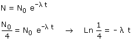
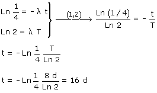

La actividad es proporcional al número de núcleos existentes (A = λ·N) . Si la actividad se ha reducido a la cuarta parte es porque quedan la cuarta parte de los núcleos que inicialmente había   Se veía venir el resultado, cada 8 días la muestra se reduce a la mitad luego en 16 días se reducirá a la mitad de la mitad que es la cuarta parte |